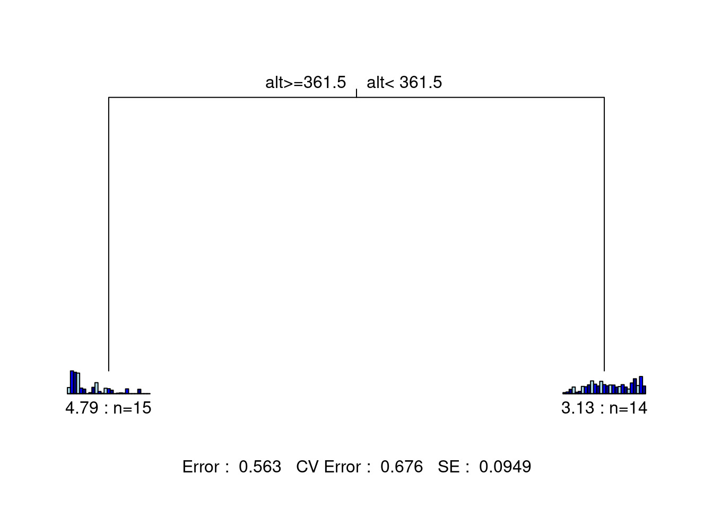
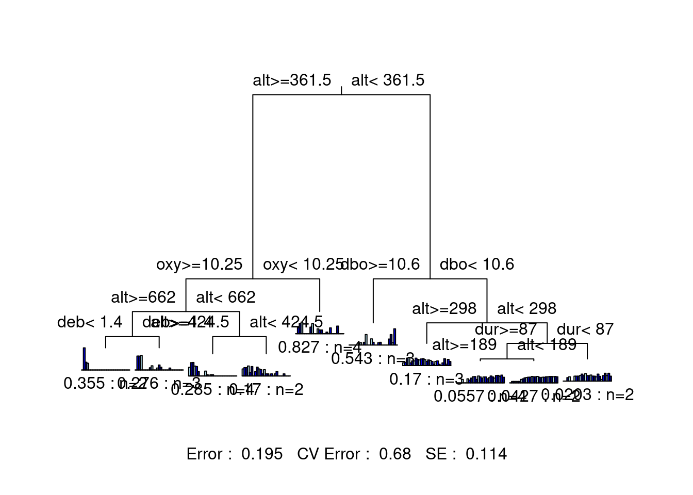

Chapter 9 Multivariate regression tree
Multivariate regression tree (MRT) is a hierarchical constrained clustering technique. Introduced by De’ath (2002), the MRT splits a response matrix (\(Y\)) into clusters based on thresholds of explanatory variables (\(X\)). Like RDA, MRT is a regression technique. While the former explains the global structure of relationships through a linear model, the latter produces a tree model to highlight local structures and interactions among variables.

Figure 9.1: The basic structure of a multivariate regression tree (MRT).
MRT has many convenient characteristics:
- It does not assume a linear relationship between Y and X matrices;
- The results are easy to visualize and interpret (it’s a tree!);
- It clearly identifies importance of explanatory variables;
- It is robust to missing values;
- It is robust to collinearity among the explanatory variables;
- It can handle raw explanatory variables, meaning there is no need to standardize.
A quick note on MRT terminology:
- Branch: each group formed by a split;
- Node: splitting point (threshold value of an explanatory variable);
- Leaf: terminal group of sites.
9.1 Computing the MRT
The MRT splits the data into clusters of samples similar in their species composition based on environmental value thresholds. It involves two procedures running at the same time: 1) the computation of the constrained partitioning of the data, and 2) the calculation of the relative error of the successive partitioning levels by multiple cross-validations. This cross-validation is, in essence, aiming to identify best predictive tree. The “best” tree varies depending on your study goals. Usually you want a tree that is parsimonious, but still has an informative number of groups. This is, of course, a subjective decision to make according to the question you are trying to answer.
9.1.1 Building the tree: Constrained partitioning of the data
First, the method computes all possible partitions of the sites into two groups. For each quantitative explanatory variable, the sites will be sorted in the ascending values of the variables. For categorical variables, the sites will be aggregated by levels to test all combinations of levels. The method will split the data after the first object, the second object and so on, and compute the sum of within-group sum of squared distances to the group mean (within-group SS) for the response data. The method will retain the partition into two groups minimizing the within-group SS and the threshold value/level of the explanatory variable. These steps will be repeated within the two subgroups formed previously, until all objects form their own group. In other words, this process ends when each leaf of the tree contains one object.
9.1.2 Selecting the tree: Cross-validation and pruning
The next step is to perform a cross-validation and identify the best predictive tree. The cross-validation procedure consists in using a subset of the objects to construct the tree, and to allocate the remaining objects to the groups. In a good predictive tree, objects are assigned to the appropriate groups. The cross-validated relative error (CVRE) is the measure of the predictive error. Without cross-validation, one would retain the number of partitions minimizing the variance not explained by the tree (i.e. the relative error: the sum of the within-group SS over all leaves divided by the overall SS of the data). This is the solution which maximizes the \(R^2\), so to speak.
9.2 MRT in R
The function mvpart() from the package mvpart computes both the partition and the cross-validation steps required to build a multivariate regression tree.
We will demonstrate the process of building a multivariate regression tree on the Doubs River data.
# First, remove the "distance from source" variable
env <- subset(env, select = -das)
# Create multivariate regression tree
doubs.mrt <- mvpart(as.matrix(spe.hel) ~ ., data = env,
xv = "pick", # interactively select best tree
xval = nrow(spe.hel), # number of cross-validations
xvmult = 100, # number of multiple cross-validations
which = 4, # plot both node labels
legend = FALSE, margin = 0.01, cp = 0)## X-Val rep : 1 2 3 4 5 6 7 8 9 10 11 12 13 14 15 16 17 18 19 20 21 22 23 24 25 26 27 28 29 30 31 32 33 34 35 36 37 38 39 40 41 42 43 44 45 46 47 48 49 50 51 52 53 54 55 56 57 58 59 60 61 62 63 64 65 66 67 68 69 70 71 72 73 74 75 76 77 78 79 80 81 82 83 84 85 86 87 88 89 90 91 92 93 94 95 96 97 98 99 100
## Minimum tree sizes
## tabmins
## 2 3 5 6 7 8 9 10
## 9 1 1 8 16 24 6 35
At this point, you will need to select the tree with an appropriate number of groups, depending on the aim of your study. In other words, you must prune the tree by picking the best-fit tree. A fully resolved tree is not the desirable outcome; instead, one is usually interested in a tree including only informative partitions/groups. In such cases, it is possible to have an a priori idea of the number of potential groups to be retained. You can make this choice interactively, with the argument xv = "pick".
The resulting figure shows the relative error RE (in green) and the cross-validated relative error CVRE (in blue) of trees of increasing size. The red dot indicates the solution with the smallest CVRE, and the orange dot shows the smallest tree within one standard error of CVRE. It has been suggested that instead of choosing the solution minimizing CVRE, it would be more parsimonious to opt for the smallest tree for which the CVRE is within one standard error of the tree with the lowest CVRE Breiman et al. (1984). The green bars at the top indicate the number of times each size was chosen during the cross-validation process. This graph is interactive, which means you will have to click on the blue point corresponding your choice of tree size. In summary:
- Green points: Relative error
- Blue points: Cross-validated relative error (CVRE)
- Red dot: Which tree has the smallest CVRE
- Orange dot: Smallest tree within one standard error of the CVRE
- Lime green bars: number of times each tree size was chosen
We don’t have an a priori expectation about how to partition this data, so we’ll select the smallest tree within 1 standard error of the overall best-fit tree (i.e. the orange dot). We can select this tree using the xv = "1se" argument.
The statistics at the bottom of the figure are: the residual error, the cross-validated error, and the standard error. This tree has only two leaves separated by one node. Each leaf is characterized by a small barplot showing the abundances of the species included in the group, the number of sites in the group, and the group’s relative error. From this figure, we can report the following statistics: * The species matrix is partitioned according to an altitude threshold (361.5 m) * Residual error = 0.563, which means the model’s \(R^2\) is 43.7% (\(1 - 0.563 = 0.437\))
9.2.1 MRT selection process
We can also compare solutions, to help us chose the best tree. For example, let’s take a look at a 10-group solution!
# Trying 10 groups
mvpart(as.matrix(spe.hel) ~ ., data = env,
xv = "none", # no cross-validation
size = 10, # set tree size
which = 4,
legend = FALSE, margin = 0.01, cp = 0, prn = FALSE)
This tree is much harder to interpret, because there are so many groups! Although this version of the tree offers higher explanatory power, its predictive power (CV Error = 0.671) is basically the same as the previous two-group solution (CV Error = 0.673). This suggests that we may want to try a tree with a few more groupings than the two-group solution, while staying lower than 10 groups.
Let’s look at a solution with fewer (4) groups!
# Trying fewer groups
mvpart(as.matrix(spe.hel) ~ ., data = env,
xv = "none", # no cross-validation
size = 4, # set tree size
which = 4,
legend = FALSE, margin = 0.01, cp = 0, prn = FALSE)
This tree is much easier to interpret! It also offers higher explanatory power (lower Error) than our original solution, and higher predictive power than both previous solutions (CV Error). We have a winner!
9.2.2 Interpreting MRT output
To find out how much variance is explained by each node in the tree, we need to look at the complexity parameter (CP). The CP at nsplit = 0 is the \(R^2\) of the entire tree.
## CP nsplit rel error xerror xstd
## 1 0.4369561 0 1.0000000 1.0772860 0.07494546
## 2 0.1044982 1 0.5630439 0.6778153 0.09551622The summary then outlines, for each node, the best threshold values to split the data.
## Call:
## mvpart(form = as.matrix(spe.hel) ~ ., data = env, xv = "1se",
## xval = nrow(spe.hel), xvmult = 100, margin = 0.01, which = 4,
## legend = FALSE, cp = 0)
## n= 29
##
## CP nsplit rel error xerror xstd
## 1 0.4369561 0 1.0000000 1.0772860 0.07494546
## 2 0.1044982 1 0.5630439 0.6778153 0.09551622
##
## Node number 1: 29 observations, complexity param=0.4369561
## Means=0.07299,0.2472,0.2581,0.2721,0.07133,0.06813,0.06897,0.07664,0.1488,0.2331,0.113,0.07879,0.1724,0.1366,0.1103,0.08216,0.08751,0.07113,0.07312,0.1345,0.06307,0.04423,0.1015,0.1862,0.07713,0.1623,0.07283, Summed MSE=0.4851823
## left son=2 (15 obs) right son=3 (14 obs)
## Primary splits:
## alt < 361.5 to the right, improve=0.4369561, (0 missing)
## deb < 23.65 to the left, improve=0.4369561, (0 missing)
## amm < 0.06 to the left, improve=0.3529830, (0 missing)
## nit < 1.415 to the left, improve=0.3513335, (0 missing)
## pen < 1.5 to the right, improve=0.3372429, (0 missing)
##
## Node number 2: 15 observations
## Means=0.1208,0.4463,0.4194,0.4035,0.1104,0.09023,0,0.02108,0.1256,0.2164,0.04392,0.01054,0.107,0.09779,0.06853,0,0.01054,0.01617,0.01054,0.09489,0,0,0,0.08629,0,0,0, Summed MSE=0.3194207
##
## Node number 3: 14 observations
## Means=0.02179,0.03391,0.08514,0.1313,0.02945,0.04444,0.1429,0.1362,0.1736,0.2509,0.1871,0.1519,0.2425,0.1781,0.1551,0.1702,0.17,0.13,0.1402,0.177,0.1306,0.09163,0.2103,0.2932,0.1598,0.3362,0.1509, Summed MSE=0.22363439.2.3 Indicator species
You might also be interested in finding out which species are significant indicator species for each grouping of sites.
# Calculate indicator values (indval) for each species
doubs.mrt.indval <- indval(spe.hel, doubs.mrt$where)
# Extract the significant indicator species (and which node
# they represent)
doubs.mrt.indval$maxcls[which(doubs.mrt.indval$pval <= 0.05)]## CHA TRU VAI LOC HOT TOX BAR SPI GOU BRO PER BOU PSO ROT CAR TAN BCO PCH GRE GAR
## 1 1 1 1 2 2 2 2 2 2 2 2 2 2 2 2 2 2 2 2
## BBO ABL ANG
## 2 2 2## CHA TRU VAI LOC HOT TOX BAR SPI
## 0.3388662 0.8674301 0.7758443 0.7042392 0.8571429 0.6185282 0.6363569 0.7347359
## GOU BRO PER BOU PSO ROT CAR TAN
## 0.6442950 0.5533235 0.5449488 0.7857143 0.8070918 0.6352865 0.7307582 0.5115135
## BCO PCH GRE GAR BBO ABL ANG
## 0.6428571 0.5000000 0.8571429 0.7726181 0.7142857 1.0000000 0.7857143TRU has the highest indicator value (0.867) overall, and is an indicator species for the first (alt >= 361.5) leaf of the tree.
9.3 Challenge 4
Create a multivariate regression tree for the mite data. * Select the smallest tree within 1 SE of the CVRE. * What is the proportion of variance (R2) explained by this tree? * How many leaves does it have? * What are the top 3 discriminant species?
Remember to load the mite data:
Recall some useful functions:
9.3.1 Challenge 4: Solution
Step 1: Create the multivariate regression tree.
mite.mrt <- mvpart(as.matrix(mite.spe.hel) ~ ., data = mite.env,
xv = "1se", # choose smallest tree within 1 SE
xval = nrow(mite.spe.hel),
xvmult = 100,
which = 4, legend = FALSE, margin = 0.01, cp = 0,
prn = FALSE)## X-Val rep : 1 2 3 4 5 6 7 8 9 10 11 12 13 14 15 16 17 18 19 20 21 22 23 24 25 26 27 28 29 30 31 32 33 34 35 36 37 38 39 40 41 42 43 44 45 46 47 48 49 50 51 52 53 54 55 56 57 58 59 60 61 62 63 64 65 66 67 68 69 70 71 72 73 74 75 76 77 78 79 80 81 82 83 84 85 86 87 88 89 90 91 92 93 94 95 96 97 98 99 100
## Minimum tree sizes
## tabmins
## 2 3 4 5 6 7 8 9 12 15
## 2 7 10 9 11 25 28 5 2 1
What is the proportion of variance (\(R^2\)) explained by this tree? * \(1 - 0.748 = 0.252\), so the tree explains 25.2% of the variance in the species matrix.
How many leaves does it have? * 2 leaves
Step 2: Identify the indicator species.
Which species are significant indicator species for each grouping of sites?
# Calculate indicator values (indval) for each species
mite.mrt.indval <- indval(mite.spe.hel, mite.mrt$where)
# Extract the significant indicator species (and which node
# they represent)
mite.mrt.indval$maxcls[which(mite.mrt.indval$pval <= 0.05)]## PHTH RARD SSTR Protopl MEGR MPRO TVIE HMIN
## 2 2 2 2 2 2 1 2
## HMIN2 TVEL ONOV SUCT LCIL Oribatl1 Ceratoz1 Galumna1
## 2 2 2 2 1 2 1 2
## Stgncrs2 Trhypch1 NCOR SLAT FSET Lepidzts Miniglmn LRUG
## 2 1 1 2 2 2 2 1
## Ceratoz3 Trimalc2
## 1 1## PHTH RARD SSTR Protopl MEGR MPRO TVIE HMIN
## 0.5317919 0.5584677 0.2256592 0.2517509 0.5769554 0.1567789 0.3793303 0.6421174
## HMIN2 TVEL ONOV SUCT LCIL Oribatl1 Ceratoz1 Galumna1
## 0.6193076 0.7412296 0.6312483 0.6087557 0.7152107 0.5978167 0.4744997 0.5974145
## Stgncrs2 Trhypch1 NCOR SLAT FSET Lepidzts Miniglmn LRUG
## 0.3897917 0.4545803 0.4539642 0.2249109 0.6361272 0.2108305 0.1880194 0.6683300
## Ceratoz3 Trimalc2
## 0.3962540 0.4358974References
Breiman, Leo, Jerome Friedman, Charles J Stone, and Richard A Olshen. 1984. Classification and Regression Trees. CRC press.
De’ath, Glenn. 2002. “Multivariate Regression Trees: A New Technique for Modeling Species–Environment Relationships.” Ecology 83 (4): 1105–17.